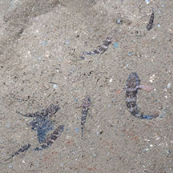
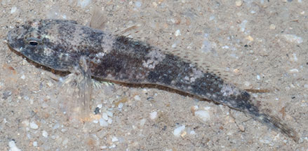
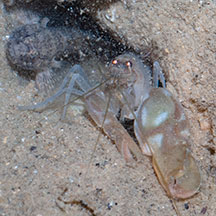
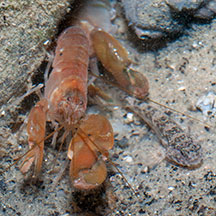

|
|
| fishes text index | photo index |
| Phylum Chordata > Subphylum Vertebrate > fishes > Family Gobiidae |
| Brown
shore goby Drombus triangularis* Family Gobiidae updated Sep 2020 Where seen? This little brown goby is often seen on many of our shores from sandy to silty shores near reefs, also among seagrasses and mangroves. Sometimes, in a group of several individuals of different sizes. Features: Up to about 5cm, those seen about 3-5cm. It has a chubby face with small eyes and a camouflaging pattern of a dark head and body with irregular pale spots and blotches that break up the body outline. |
 Sometimes in a group of individuals of different sizes. Punggol, Jun 12 |
 Pasir Ris Park, Apr 10 |
| Living with a shrimp: This fish is sometimes seen sharing a burrow with a Smooth snapping shrimp. More about the goby and shrimp partnership. |
 Pasir Ris Park, Jun 08 |
 Changi, Jun 04 |
*Species are difficult to positively identify without close examination.
On this website, they are grouped by external features for convenience of display.
| Brown shore gobies on Singapore shores |
On wildsingapore
flickr
|
| Other sightings on Singapore shores |
Links
|